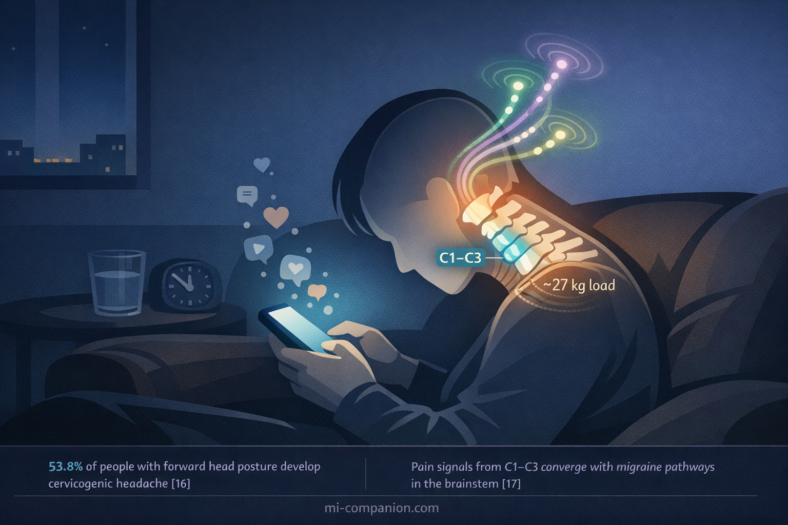
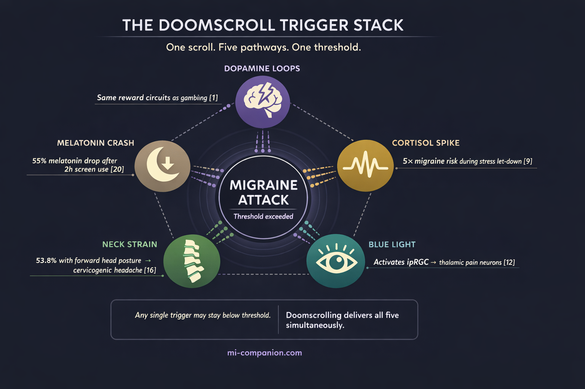

By Rustam Iuldashov
30 years lived experience with chronic migraine | Sources: 23 peer-reviewed references including Nature Neuroscience, PNAS (n=60), Neurology (n=17, 2,011 diary records), Cephalalgia (n=4,927), The Lancet | Last updated: March 11, 2026
Medical Review: This content is based on peer-reviewed research from Nature Neuroscience, PNAS, Neurology, Cephalalgia, The Lancet, BMJ Open, Lancet Neurology, Musculoskeletal Science and Practice, Chronobiology International, and Headache.
Important Notice: This article is for informational purposes only and does not replace professional medical advice. The author is not a licensed physician or healthcare professional. Always consult your doctor before making changes to your treatment plan.
Key Takeaways
- Doomscrolling isn’t a single trigger — it’s a simultaneous five-pathway assault on the migraine brain: dopamine dysregulation, stress/cortisol activation, blue light photophobia, cervicogenic neck strain, and melatonin suppression[1–23]
- Social media activates the same reward circuits as gambling and substance addiction — the migraine brain, already hyperexcitable, is especially vulnerable to these dopamine loops[1, 2, 4, 5]
- The “let-down headache” effect means a scrolling session followed by suddenly stopping can trigger a migraine within six hours[9]
- Blue light from screens activates specialized retinal cells (ipRGCs) that directly converge with migraine pain pathways in the thalamus — and migraine brains amplify these signals beyond normal levels[12, 13]
- Protect yourself: set a phone curfew 60–90 minutes before bed, use night mode, take 2-minute posture breaks every 20 minutes, and consider FL-41 tinted lenses for evening screen use
It’s 11:47 p.m. You told yourself you’d stop twenty minutes ago. But your thumb keeps flicking — another headline, another reel, another comment thread pulling you deeper into the glow. Your neck aches. Your eyes burn. And somewhere behind your right temple, a familiar pressure begins to build.
You’re not just scrolling. You’re stacking triggers.
Most people think of screen time as a single migraine problem: the light. But doomscrolling — that compulsive, often late-night descent into negative or algorithmically-curated content — hits the migraine brain on five biological pathways at once. That convergence is what makes it so quietly devastating.
Your Brain on the Feed: The Dopamine Trap
Social media platforms are engineered to exploit one thing: your reward circuitry. Every like, every notification, every surprise video activates the ventral striatum — the same dopamine-rich brain region involved in gambling and substance addiction.[1] A 2025 neurophysiological EEG study confirmed that social media engagement triggers reward-pathway activation resembling addictive behavior, with prolonged beta and gamma wave activity that disrupts both emotional regulation and sustained attention.[2]
Why does this matter if you live with migraine? Because the migraine brain is already hyperexcitable.[3] Neurons fire more readily, process stimuli more intensely, recover more slowly. Layer a dopamine-driven reward loop on top of an already overreactive nervous system, and you’re flooding a house that’s already leaking.
The neurochemistry tells the story. Research on internet addiction reveals increased dopamine secretion paired with decreased dopamine receptor availability in the striatum — a pattern that mirrors substance use disorders.[4] A case-control study of 66 adolescents found significantly elevated plasma dopamine in those with internet addiction, and dopamine levels correlated positively with weekly hours online.[5] More scrolling means more dopamine. More dopamine means fewer receptors. Fewer receptors mean you chase harder stimulation — while your sensitized migraine brain absorbs every jolt.
The dopamine loop in numbers: Social media interactions activate the same brain regions involved in addiction and reward processing, reinforcing compulsive usage patterns.[1] Internet-addicted adolescents show significantly higher plasma dopamine levels than matched controls, with levels positively correlated to weekly online hours (r=0.457, p<0.001).[5]
The Anxiety Pipeline: When Relaxation Becomes the Trigger
Doomscrolling feels passive. It isn’t. It’s emotional labor disguised as winding down.
A multi-study analysis of approximately 1,200 adults found that doomscrolling correlates with worse mental well-being and reduced life satisfaction.[6] The mechanism is visceral: repeated exposure to threat-based content overstimulates the amygdala and triggers prolonged stress responses, including elevated cortisol.[7]
Stress is the most commonly reported migraine trigger — roughly 70% of people with migraine identify it.[8] But the relationship hides a paradox. A Montefiore Headache Center diary study tracking 2,011 daily records found that a decline in stress was associated with a nearly five-fold increased risk of migraine onset within six hours.[9] Researchers call it the “let-down headache.”
Doomscrolling creates exactly this trap. You sustain low-grade cortisol activation for an hour. Then you put the phone down, your stress drops — and the migraine gate swings open. A 2021 narrative review of 2,223 records confirmed that changes in stress levels act as risk factors for individual attacks, and that major stressful events precede the transformation from episodic to chronic migraine.[10] Simmering anxiety is enough to destabilize an already vulnerable nervous system. The scrolling doesn’t need to feel dramatic.
The let-down paradox: The most dangerous moment isn’t during the scroll — it’s when you finally stop. A nearly five-fold increase in migraine risk within six hours of stress reduction.[9] Your phone sustains the cortisol. Putting it down releases the trigger.
The Light That Hurts: Why Your Screen Hits the Migraine Brain Differently
About 80% of people with migraine experience photophobia — extreme light sensitivity.[11] And it’s not about brightness alone.
In 2010, Noseda and colleagues made a discovery that reshaped our understanding of migraine and light. They identified that specialized retinal cells called intrinsically photosensitive retinal ganglion cells (ipRGCs) — containing the photopigment melanopsin, most sensitive to blue light at 480 nm — send signals directly to thalamic neurons that also carry migraine pain.[12] Light and pain literally converge on the same neural circuit (a phenomenon explored deeply in screen science).
A 2020 study in PNAS went further. People with migraine don’t receive more light than anyone else. Their brains amplify the discomfort signal — a selective, post-retinal enhancement of ipRGC output.[13] When you doomscroll in a dark room, the contrast between bright screen and surrounding darkness maximizes stimulation of precisely these cells.
⚠️ When to Seek Emergency Help
A migraine with sudden visual changes, speech difficulties, weakness on one side, or the worst headache of your life is NOT a typical migraine — it may indicate stroke or another neurological emergency. If you experience any of these symptoms, call your local emergency number immediately. Do not wait.
Do not use this article to self-diagnose.
The epidemiology aligns. A cross-sectional study of 4,927 young adults found that those in the highest screen-time quintile had 37% higher odds of migraine — and for migraine without aura, the risk climbed to 50%.[14] Among 771 Bangladeshi students during COVID-era online education, 86% developed migraine or tension-type headaches, with longer screen duration as a significant predictor.[15]
The Neck You’re Destroying: Text Neck Meets Trigeminocervical Convergence
While your eyes absorb the light and your brain chases dopamine, your neck is quietly failing.
A 2025 study of 117 patients with forward head posture found that 53.8% met diagnostic criteria for cervicogenic headache — pain that originates in the cervical spine and radiates to the head.[16] The mechanism has a name: trigeminocervical convergence. Pain signals from the upper cervical vertebrae (C1–C3) merge with trigeminal nerve pathways in the brainstem — the same pathways that carry migraine pain to the cortex.[17]
A systematic review and meta-analysis quantified the damage: people with tension-type headache show a craniovertebral angle 6.18 degrees lower than healthy controls, consistent with forward head posture, plus significantly reduced cervical range of motion.[18] Research on office workers found that more than three hours of daily sedentary screen use increases biomechanical stress linked to both cervicogenic headache and primary headache disorders, including migraine.[19]
Every minute you spend hunched over your phone, you’re loading the same nerve junction your migraine uses to send pain signals to your brain.

The Sleep Thief: Melatonin Suppression After Dark
The doomscroll happens at the worst possible time: the hour before sleep.
Blue light from LED screens suppresses melatonin — the hormone that tells your body night has arrived. A randomized crossover study found that two hours of evening LED tablet exposure caused a 55% drop in melatonin and delayed its onset by 1.5 hours compared to reading a printed book.[20] A separate experimental study found that blue light reduced sleep duration by approximately 16 minutes and prevented the natural body temperature decline that initiates deep sleep.[21]
For the migraine brain, this is catastrophic. Sleep disruption and migraine share a bidirectional relationship: poor sleep lowers the migraine threshold, and migraine destroys sleep quality.[22] A scoping review of 48 studies on screen time and pediatric headache found the strongest association with duration of use — and migraine appeared to carry higher risk than other headache types.[23]
Late-night scrolling doesn’t just steal an hour of rest. It rewires the conditions that determine whether tomorrow starts with clarity or with pain.
The Trigger Stack: When Five Pathways Fire at Once
Here’s what makes doomscrolling uniquely dangerous for people who live with migraine: it doesn’t attack through one mechanism. It attacks through five — simultaneously.
Dopamine dysregulation. Stress and cortisol activation. Blue light photophobia. Cervicogenic neck strain. Melatonin suppression. Any single factor might stay below your migraine threshold. But doomscrolling delivers all five in one seamless, compulsive package.
I’ve lived with migraine for 30 years. I’ve tracked my triggers through decades of trial and error — which is exactly why I built Migraine Companion. The triggers I didn’t see were always the most dangerous ones, precisely because they felt like nothing. Scrolling feels like nothing. It feels like rest. That’s the trap.

The Architectural Fix
The fix isn’t dramatic. It’s architectural. Small changes to your scrolling environment that protect all five pathways at once:
Phone Curfew
Set a hard stop 60–90 minutes before bed. This protects melatonin, reduces late-night cortisol activation, and breaks the dopamine loop before sleep.
Screen Settings
Enable night mode and reduce brightness. If screens are unavoidable in the evening, consider FL-41 tinted lenses — they filter the melanopsin-activating wavelengths most implicated in migraine photophobia.
The 20-Minute Rule
Every 20 minutes of scrolling, take a two-minute posture break — chin tucks, shoulder rolls, eyes on a distant point. This protects the cervical spine and gives your visual system a reset.
Track It
Add “Screen Time” or “Doomscrolling” as a custom factor in Migraine Companion, and see whether your late-night feed is setting the stage for tomorrow’s attack.
Your phone isn’t your enemy. But the mindless spiral — the one that stacks dopamine, cortisol, blue light, neck strain, and sleep disruption into a single hour — might be the trigger you never thought to track.
⚕️ Important Medical Disclaimer
This article is for informational and educational purposes only and does not constitute medical advice, diagnosis, or treatment. The author, Rustam Iuldashov, is not a licensed physician, neurologist, or healthcare professional. He is a patient advocate with 30 years of personal experience living with chronic migraine.
All clinical claims in this article are sourced from peer-reviewed research published in indexed medical journals. Study designs and sample sizes are noted where applicable.
Always consult a qualified healthcare provider for questions about your individual health, migraine treatment, or medication decisions.
If you are currently experiencing changes in headache pattern, new neurological symptoms, or headaches that don’t respond to your usual treatments, please see your doctor. Changes in screen habits should complement — never replace — professional medical care. This content was last reviewed for accuracy on March 11, 2026.
References
- Turel O, He Q, Xue G, Xiao L, Bechara A. “Examination of neural systems sub-serving Facebook ‘addiction’.” Psychological Reports, 115(3):675-695 (2014). doi:10.2466/18.PR0.115c31z8. Study design: Cross-sectional neuroimaging. n=20.
- “Modern Day High: The Neurocognitive Impact of Social Media Usage.” Cureus, 17(4) (2025). doi:10.7759/cureus.80016. Study design: EEG observational study.
- Ashina M, Buse DC, Ashina H, et al. “Migraine: integrated approaches to clinical management and emerging treatments.” The Lancet, 397(10283):1505-1518 (2021). doi:10.1016/S0140-6736(20)32342-4. Study design: Review.
- Pino D, et al. “Neurobiological risk factors for problematic social media use as a specific form of Internet addiction: A narrative review.” World Journal of Psychiatry, 13(5):160-173 (2023). doi:10.5498/wjp.v13.i5.160. Study design: Narrative review.
- Hou H, Jia S, Hu S, et al. “Relationship between peripheral blood dopamine level and internet addiction disorder in adolescents: a pilot study.” Behavioral and Brain Functions, 8:52 (2012). doi:10.1186/1744-9081-8-52. Study design: Case-control. n=66.
- Satici SA, Gocet Tekin E, Deniz ME, Satici B. “Doomscrolling Scale: its Association with Personality Traits, Psychological Distress, Social Media Use, and Wellbeing.” Applied Research in Quality of Life, 18:833-847 (2023). doi:10.1007/s11482-022-10110-7. Study design: Multi-study survey. n=1,257 total.
- George M, et al. “Doomscrolling Among Generation Z Social Media Users.” (2024). Study design: Observational.
- Kelman L. “The triggers or precipitants of the acute migraine attack.” Cephalalgia, 27(5):394-402 (2007). doi:10.1111/j.1468-2982.2007.01303.x. Study design: Prospective survey. n=1,207.
- Lipton RB, Buse DC, Hall CB, et al. “Reduction in perceived stress as a migraine trigger: Testing the ‘let-down headache’ hypothesis.” Neurology, 82(16):1395-1401 (2014). doi:10.1212/WNL.0000000000000332. Study design: Prospective electronic diary. n=17 (2,011 diary records, 110 attacks).
- Stubberud A, Tronvik E, Olsen A, Linde M, Hagen K. “Is there a causal relationship between stress and migraine? Current evidence and implications for management.” The Journal of Headache and Pain, 22:155 (2021). doi:10.1186/s10194-021-01369-6. Study design: Narrative review. n=2,223 records screened.
- Choi JY, Oh K, Kim BJ, Chung CS, Koh SB, Park KW. “Usefulness of a photophobia questionnaire in patients with migraine.” Cephalalgia, 29(9):953-959 (2009). doi:10.1111/j.1468-2982.2008.01822.x. Study design: Cross-sectional. n=275.
- Noseda R, Kainz V, Jakubowski M, et al. “A neural mechanism for exacerbation of headache by light.” Nature Neuroscience, 13(2):239-245 (2010). doi:10.1038/nn.2475. Study design: Animal electrophysiology/immunohistology.
- McAdams H, Kaiser EA, Igdalova A, et al. “Selective amplification of ipRGC signals accounts for interictal photophobia in migraine.” Proceedings of the National Academy of Sciences, 117(29):17320-17329 (2020). doi:10.1073/pnas.2007402117. Study design: Case-control psychophysics. n=60.
- Montagni I, Guichard E, Carpenet C, Tzourio C, Kurth T. “Screen time exposure and reporting of headaches in young adults: A cross-sectional study.” Cephalalgia, 36(11):1020-1027 (2016). doi:10.1177/0333102415620286. Study design: Cross-sectional (i-Share cohort). n=4,927.
- Hasan MN, et al. “Increased screen time and its association to migraine and tension-type headache: a cross-sectional investigation among Bangladeshi students.” BMJ Open, 14(5):e078866 (2024). doi:10.1136/bmjopen-2023-078866. Study design: Cross-sectional. n=771.
- Ozdemir M, et al. “Cervicogenic headache in forward head posture: frequency and associated factors in a cross-sectional study.” Journal of Functional and Physical Health, (2025). doi:10.22514/jofph.2025.061. Study design: Cross-sectional. n=117.
- Bogduk N, Govind J. “Cervicogenic headache: an assessment of the evidence on clinical diagnosis, invasive tests, and treatment.” Lancet Neurology, 8(10):959-968 (2009). doi:10.1016/S1474-4422(09)70209-1. Study design: Evidence review.
- Liang L, Feng M, Cui X, et al. “Cervical musculoskeletal impairments in migraine and tension type headache: A systematic review and meta-analysis.” Musculoskeletal Science and Practice, 42:67-83 (2019). doi:10.1016/j.msksp.2019.04.007. Study design: Systematic review/Meta-analysis.
- “Classifying office workers with and without cervicogenic headache using posture-based deep learning models.” Frontiers in Pain Research, (2025). doi:10.3389/fpain.2025.1614143. Study design: Multicenter retrospective.
- Chang AM, Aeschbach D, Duffy JF, Czeisler CA. “Evening use of light-emitting eReaders negatively affects sleep, circadian timing, and next-morning alertness.” Proceedings of the National Academy of Sciences, 112(4):1232-1237 (2015). doi:10.1073/pnas.1418490112. Study design: RCT crossover. n=12.
- Green A, Cohen-Zion M, Haim A, Dagan Y. “Evening light exposure to computer screens disrupts human sleep, biological rhythms, and attention abilities.” Chronobiology International, 34(7):855-865 (2017). doi:10.1080/07420528.2017.1324878. Study design: Experimental crossover. n=19.
- Rains JC, Poceta JS. “Sleep and headache.” Current Treatment Options in Neurology, 12:1-15 (2010). doi:10.1007/s11940-009-0056-y. Study design: Review.
- Bukhman VA, et al. “Screen time and pediatric headache: A scoping review of the literature.” Headache, 64(2):113-128 (2024). doi:10.1111/head.14660. Study design: Scoping review. n=48 studies.

How We Create Content
- Peer-reviewed sources only. Nature Neuroscience, PNAS, Neurology, Cephalalgia, The Lancet, BMJ Open, Lancet Neurology, Musculoskeletal Science and Practice, Chronobiology International, Headache, Applied Research in Quality of Life, World Journal of Psychiatry.
- Study transparency. Study design and sample sizes noted for all clinical references.
- Source verification. All claims backed by numbered references with DOI links.
- Experience + Science. 30 years personal migraine experience combined with peer-reviewed evidence.
- Regular updates. Articles reviewed when significant new research emerges.
- No conflicts of interest. No funding from social media platforms, blue-light filter manufacturers, or pharmaceutical companies.
Track the Triggers You Can’t See
Add “Doomscrolling” or “Screen Time” as a custom factor in Migraine Companion. Build the personal dataset that reveals whether your late-night feed is setting the stage for tomorrow’s attack.
Last reviewed: March 2026
Next scheduled review: September 2026